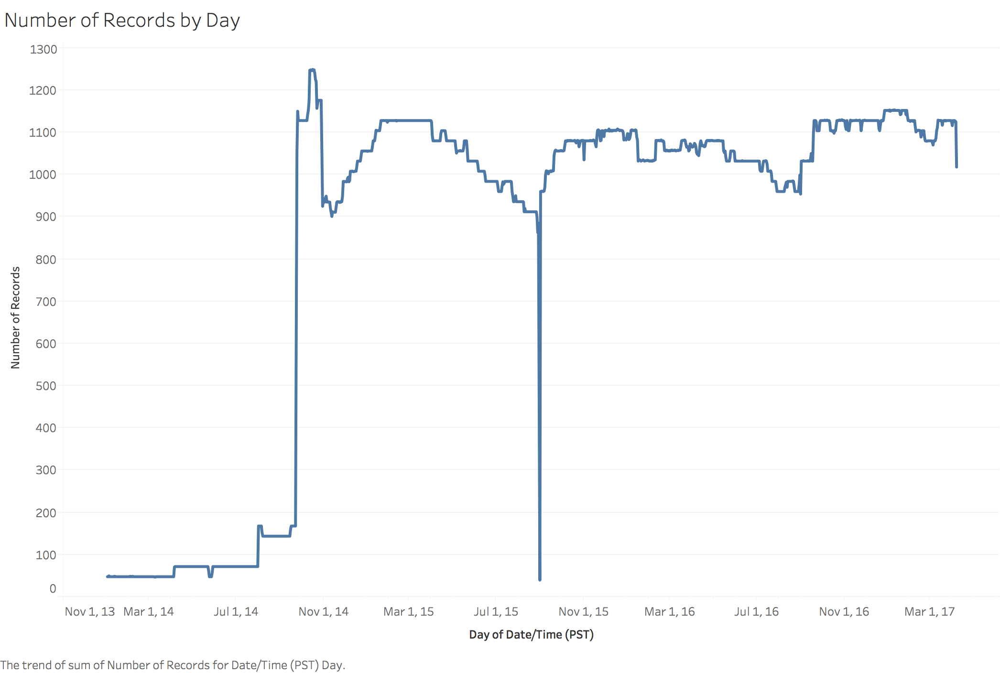
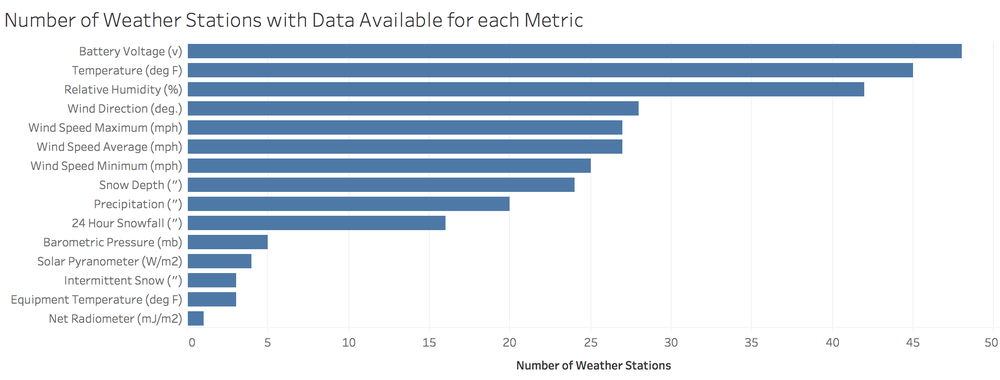
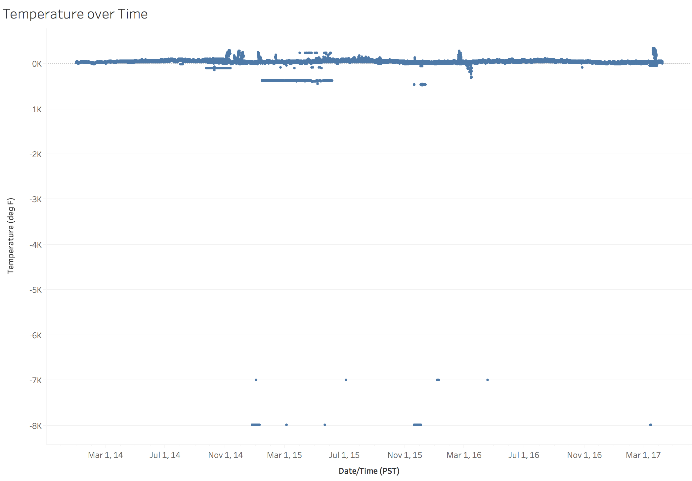
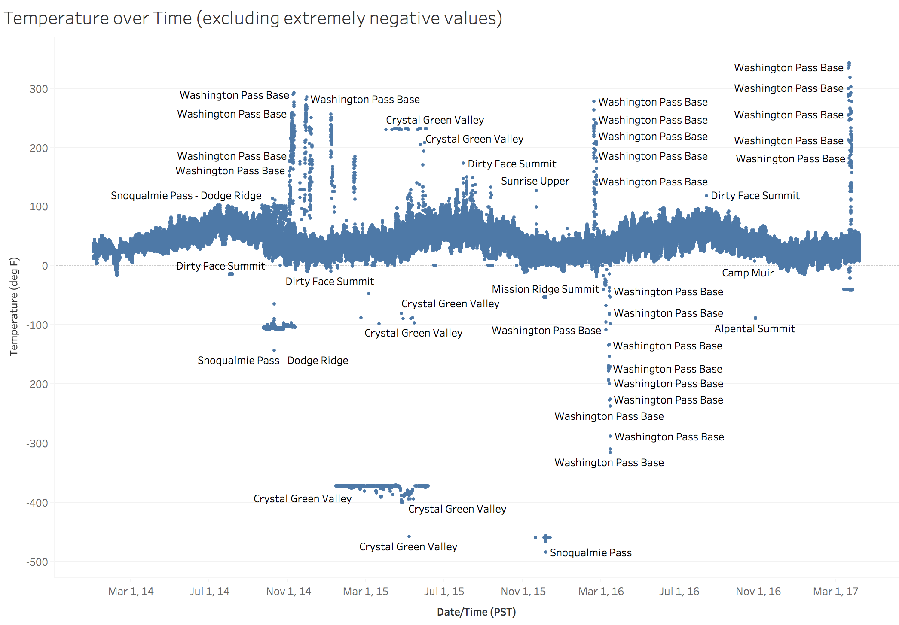
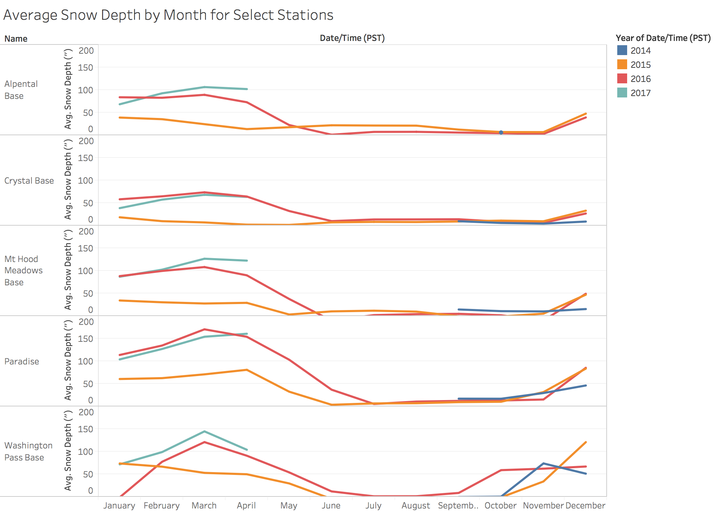
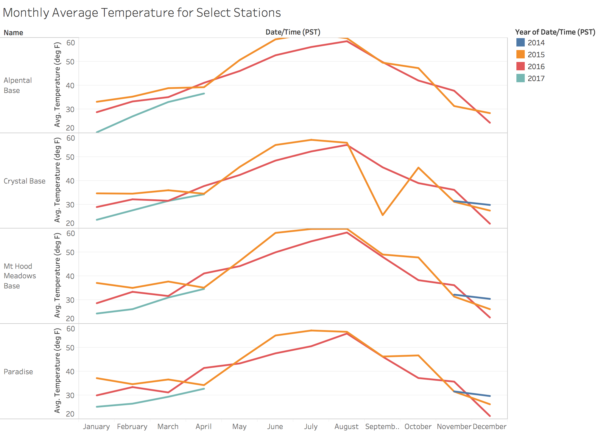
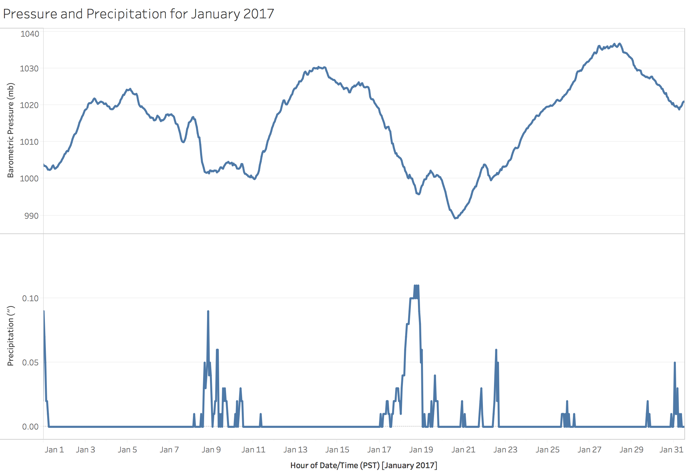
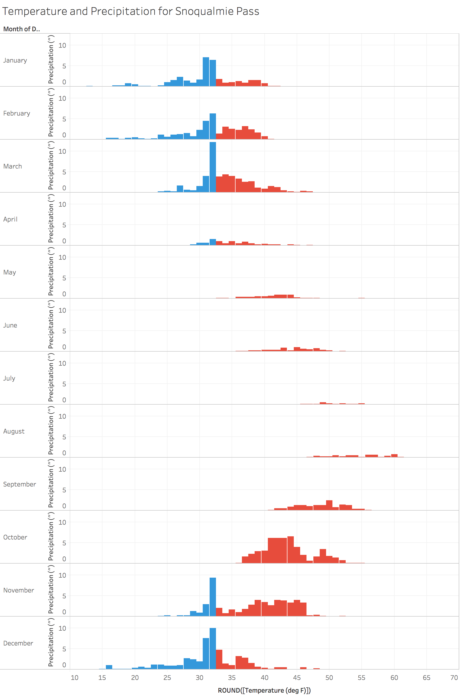
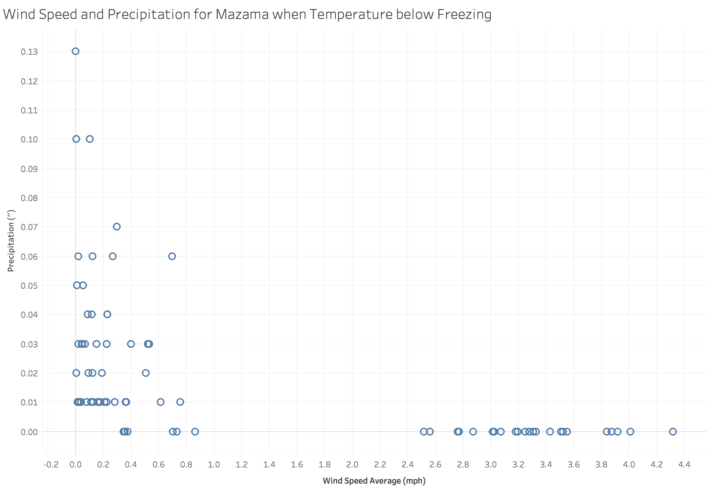
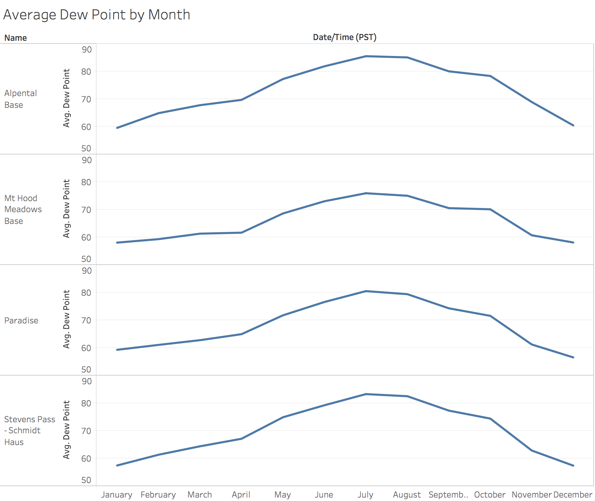

From this chart we can see that data is available starting in October 2014. For some reason, there is a spike in October 2014 followed by a trough in November. As the winter of 2014-2015 progresses, more data becomes available. I suspect that this has something to do with the initial setup of the system. We can also see that some weather stations are shut off during the summer. There is also a lack of data for August 31, 2015. Data is only available for 11:00pm on that day. I suspect that there was some technical glitch that caused this.
Assignment 2: Exploratory Data Analysis
Lane Aasen — aaasen@uw.edu
Dataset
Northwest Avalanche Center (NWAC) Weather Data
The Northwest Avalanche Center provides avalanche forecasts, incident reports,
and weather analysis for the Pacific Northwest. Their daily avalanche forecasts
are an essential safety tool for backcountry skiers, snowshoers, and snowmobilers.
NWAC has published weather data for its 48 mountain weather stations since 2014.
One of the most tangible impacts of global warming in the Pacific Northwest will
be warmer winters with less snow. Our mountains lie in a coastal climate, and the
difference between rain and snow is often just a few degrees.
The historically warm and wet winter of 2014-2015 gave us a preview of what winters
could look like in the future. Ski resorts stuggled to open and a lack of snowpack
created water shortages in the summer.
The data is available online at:
http://www.nwac.us/data-portal/
The NWAC data portal provides CSV files by station and year. I have published a
script to download all of the files and combine them into a single CSV that is
available on GitHub here.
Initial Analysis Questions
- How much warmer was the winter of 2014-2015?
- When will conditions like those of 2014-2015 become normal?
- What impacts could warming of a few degress have on mountain weather in the PNW?
Discoveries & Insights


j
Not all weather stations have the same sensors. The above chart shows how many weather stations have data for each metric. Every station publishes its battery voltage, which is unfortunately not very interesting. Temperature and humidity data is available for almost all stations, and wind information is available for more than half. Snow depth, precipitation, and 24-hour snowfall are available for less than half of weather stations. These metrics are more common for stations within ski resorts.

Since temperature is the most widely available metric, I decided to start my analysis here. Unfortunately, the data needed a bit of cleaning. Above is a scatterplot of temperature over time. There are some obviously incorrect data points with extremely negative values. These data points come from multiple stations and are all either -6999 or -7999. This makes me think that it is some sort of error code, but I could not find any documentation on it.

After excluding the extremely negative values, we can actually begin to analyze the data.
The good news is that there is a clear seasonal trend in temperature as we would expect.
The bad news is that there are still quite a few outliers.
The Washington Pass Base and Crystal Green Valley stations are exceptionally unreliable.
I decided to exclude them from the rest of the analysis because I did not feel that
the sensors were trustworthy.
There are other outliers that are more difficult to filter out.
-53.5 degrees on Tumwater mountain in January? Possible, but not likely
considering that no other station reported subzero temperatures at that time.

The chart above shows average snow depth by month for a selection of low-elevation
weather stations. From this chart we can clearly see how bad the winter of 2014-2015 was.
The base of Crystal barely had any snow the entire season, and other ski areas
didn't do much better.
Paradise, which sits at the base of Mt.Rainier, melted out a month before normal.
The masses of snow that accumulate on the flanks of Mt.Rainier gradually melt
out in the spring and summer and provide drinking water to millions in the Seattle-Tacoma
metropolitan area. Without substantial snowfall during the winter, the glaciers and
snowfields of Rainier will subside and drastically alter the entire PNW ecosystem.

This chart shows the average temperature by month for the weather stations above.
Note that Washington Pass Base is excluded because it has unreliable temperature data.
The Crystal base station does not have data for the first half of September 2015
which throws off the average.
We can clearly see that winter of 2014-2015 was warm, but not much warmer than the winter
of 2015-2016. The winter of 2016-2017 has been significantly colder than either of the
two preceding winters.
I was hoping that I could use this data to calculate how much warmer the winter of 2014-2015
was compared to average. Computing this is much more difficult than I expected.
Since this dataset only goes back to 2014, we can't establish a historical baseline.

The above image shows barometric pressure and hourly precipitation at Snoqualmie Pass for January 2017. You can clearly see that pressure and precipitation are inversely correlated.

This chart shows total precipitation grouped by temperature for Snoqualmie Pass. The Cascades are low elevation coastal mountains, so the difference between rain and snow is often just a couple degrees. There are only three months where the majority of precipitation falls while the temperature is below freezing: December, January, and February. Even during these winter months, most precipitation falls when the temperature is just 31 or 32 degrees. Warming of even a few degrees could tip the balance just enough that almost no snow would fall at low elevation mountain passes.

When high winds and snow mix, they form unstable wind slabs which can be easily
triggered by humans. I wanted to explore the relationship between 24-hour snowfall
and wind speed, but unfortunately the data for 24-hour snowfall was completely useless.
It was unavailable for most stations, and the stations that did have snowfall data
reported negative values most of the time. I decided to use sub-freezing precipitation
as a proxy for snowfall. This is an OK proxy, but it doesn't capture the times when
the wind is blowing just after heavy snowfall, which can be very dangerous.
Based on this chart, we can see that high winds usually do not occur during times
of precipitation in Mazama.

This chart shows the average dew point by month. The dew point is related to relative
humidity and temperature; it is "the temperature to which air must be cooled to become
saturated with water vapor" (Wikipedia). I used a simple approximation of the dew point
for this visualization.
The main reason that I am interested in dew points is for rock climbing. Friction potential
is highest when the dew point is low, which seems to happen in the winter in the PNW.
Summary
There were three main shortcomings of this dataset:
- Lack of historical data for comparison. Data was only available starting in October 2014, or even later for some stations. Some weather stations, such as those at Alpental, only operate during the ski season. Both of these factors combine to make historical comparisons difficult.
- Unreliable data. Many sensors report completely incorrect metrics. These errors are sporadic and call into question the accuracy of the entire dataset. If a weather station publishes garbage data on one day, should we trust it on the next day?
- No common set of metrics for comparison. Each weather station is equipped with different sensors. The only one that they all have in common is temperature.
Because of these issues, I was not able to determine exactly how much warmer the winter of 2014-2015 was compared to a normal year. However, I was able to show that most precipitation at Snoqualmie Pass falls when the temperature is right around freezing, and that warming of even a couple degrees could significantly decrease the amount of low-elevation snow in that area. This could cause ski resorts throughout the PNW to shut down and limit winter-time outdoor recreation. More importantly, having more rain and less snow would increase flooding in the shoulder seasons and droughts in the summer. The effect of global warming on mountain ecosystems is not something that I hear much about, but it is an important issue that could have a widespread impact throughout the world. Hopefully this analysis shows that at least a little bit, or at least gives some insight into the problems that meteorologists and climate scientists face in their work.